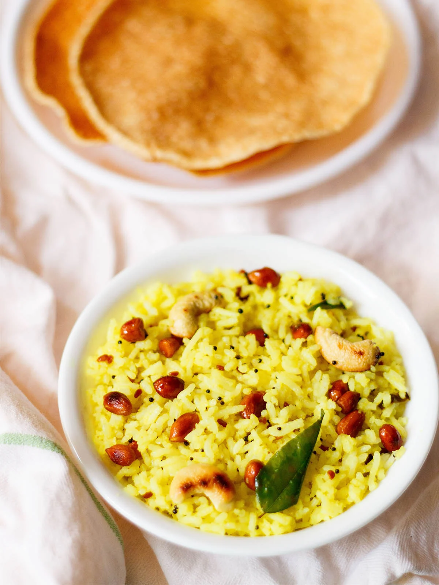

HOME
RICE

How to Cook Rice on the Stove
When you think about making rice, this is the technique that probably comes to mind first — and it starts with a 2:1 ratio of water to rice. This method works well with long-grain white rice. If you've got a short-grain rice, you can always check the package instructions for how to tailor this technique.
- Rinse the rice
- Bring water to a boil, then add the rice. Fill the pot with water (no need to measure), just like you do with pasta water. Bring it to a boil, season with salt, and then carefully add your desired amount of rice.
- Maintain a boil. Boil uncovered without stirring until the rice is softened through but still a tad al dente (read: not mushy).
- Drain the rice. Drain the rice through a fine mesh strainer.
see more recipies below:
Halwa